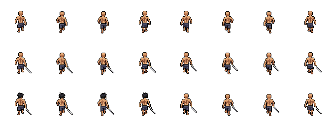

Carregando camadas…
Norte · estudo parcial, fora do personagem final
O corpo e o contato da espada passaram. O cabelo foi reprovado nos frames 5–8 e não está registrado no compositor. A roupa não foi gerada. Não há substituição de frames, recoloração ou simulação de uma sequência completa.
Carregando estudo…
Comparar com o movimento original
Primeira linha: corpo de costas. Segunda: corpo e espada. Terceira: cabelo bruto reprovado, que deixa os quatro últimos frames carecas. O corpo e os passos foram preservados.

Cobertura: Idle nas quatro direções e caminhada frontal. A direção norte usa fallback por falta de cabelo válido e roupa; os perfis e todos os ataques continuam usando o renderizador existente. Este pacote é de inspeção e não ativa um personagem incompleto na aventura.
Passos a 8 FPS, sem espelhamento, duplicação ou interpolação. A espada original acompanha encaixes reais da mão, atrás do corpo. Roupa e cabelo possuem oito camadas próprias.
Ver corpo e espada de costas (estudo) · Pacote de inspeção · Relatório